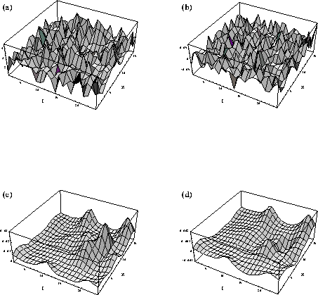

The instanton content of gauge configurations generated
on a lattice can be explored using a method called cooling.
Figs. (a) and (b) show the field strength and the topological
charge density on a slice through a four dimensional lattice.
Clearly, the configurations are very noisy and non pattern
emerges. Cooling is a procedure in which the original
configurations are updated, but only changes that lower
the action are accepted (whereas, in the standard Metropolis
algorithm, updates are accepted with the probability exp(-
Del S)). Classical configurations are minima of the action,
so cooling makes quantum configurations more and more
classical.
Figs. (c) and (d) show the field strength and topological charge
density after 25 cooling sweeps. Instantons emerge as bumps
in the field strength. Looking at the topological charge
allows us to distinguish bumps (instantons) from anti-bumps.
Source: Chu, Huang, Grandy and Negele, Phys. Rev. D